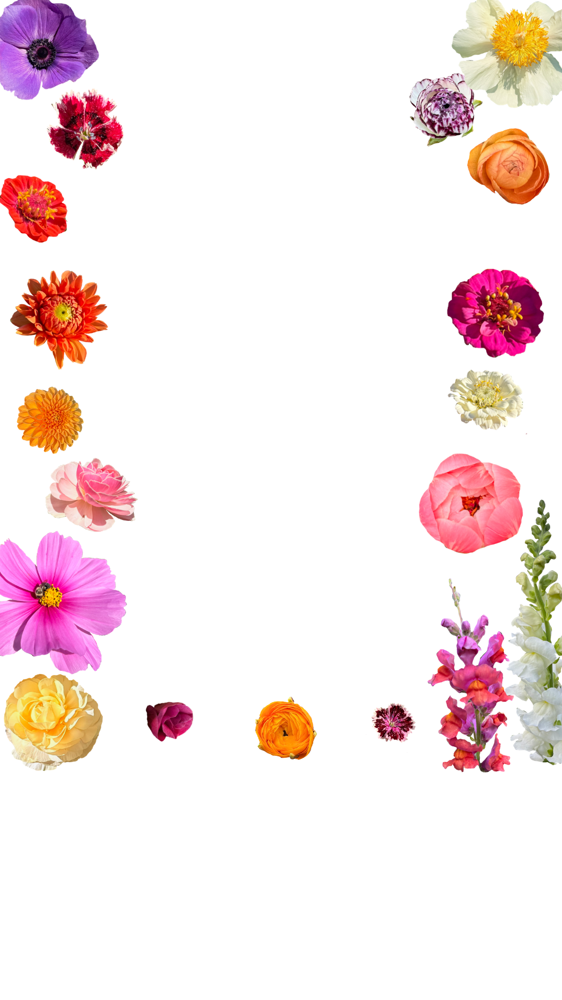

artist & art educator
Hi there! My name is Emily Briggs. I am an artist and certified art teacher based in Newtown, CT. A successful art education fosters skills in creativity, curiosity, and communication while encouraging critical thinking and self-expression, and my goal is to deliver an art curriculum that is rigorous, multicultural, and rooted in art history.
I feel fulfilled by many forms of creative expression. I especially love to paint, draw, make stained glass and ceramics, embroider, take photos, and create linocut prints. When I'm not making art, you will definitely find me in my kitchen or garden!